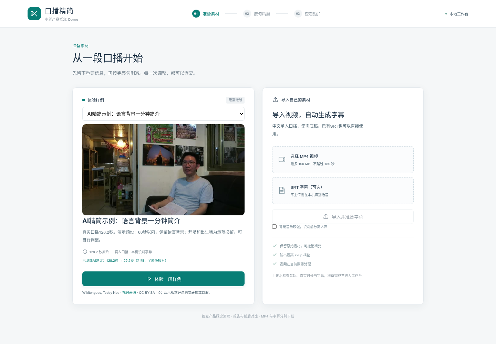
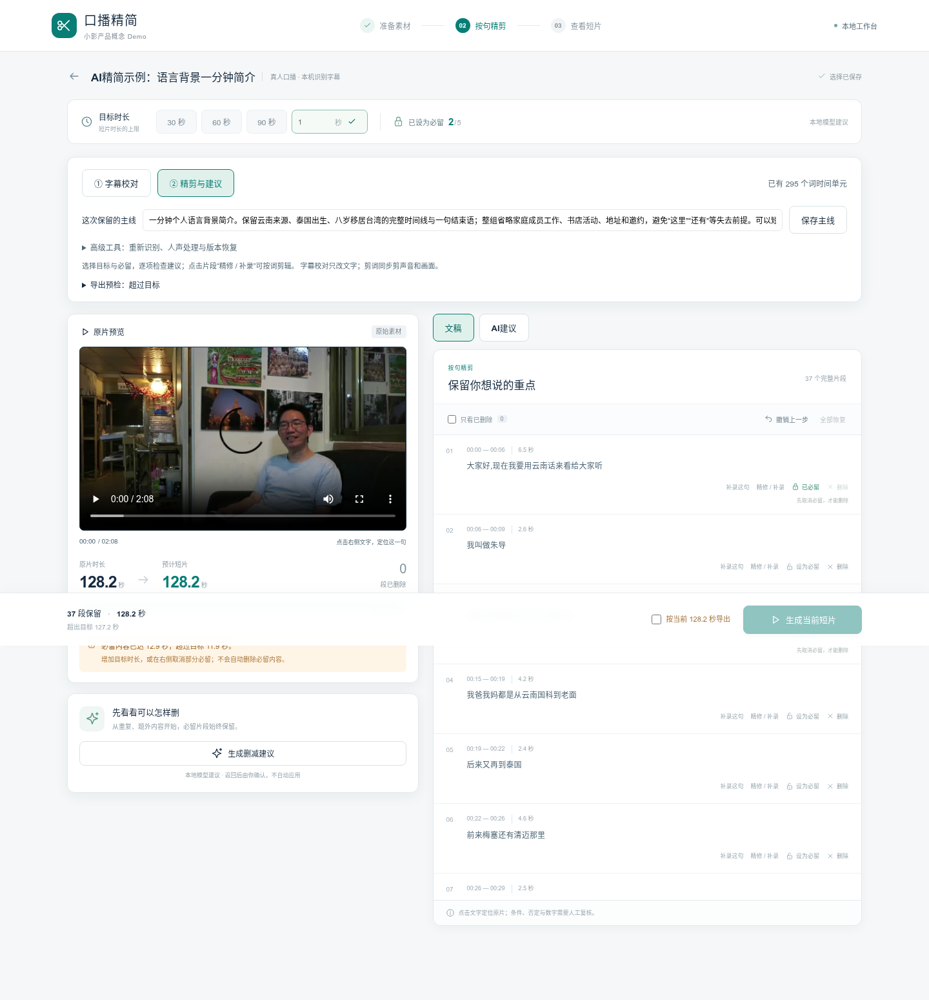
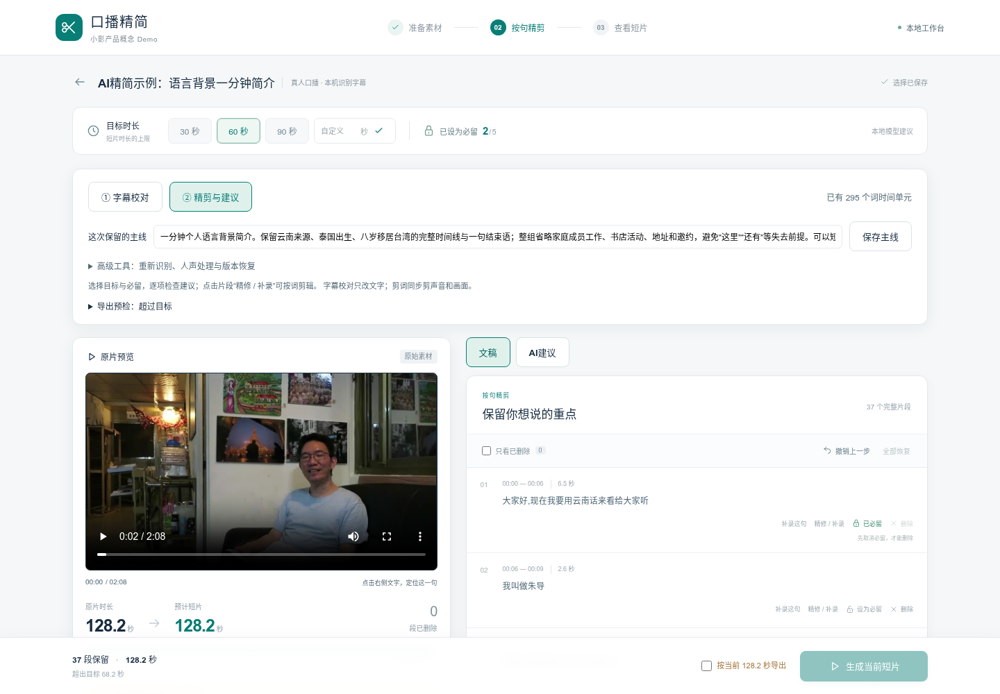
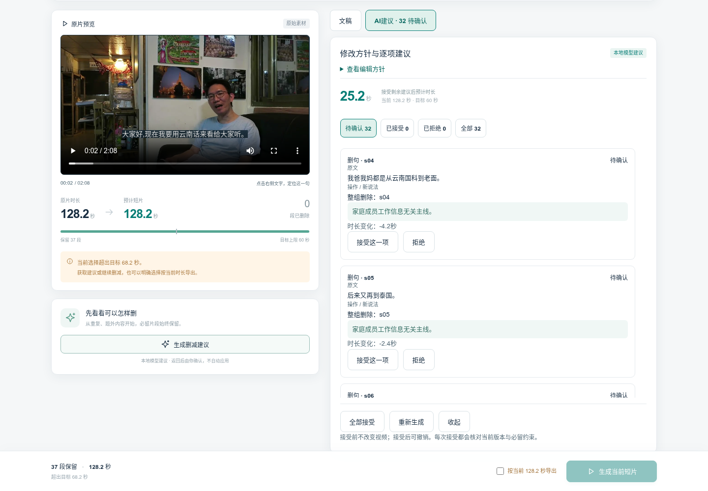
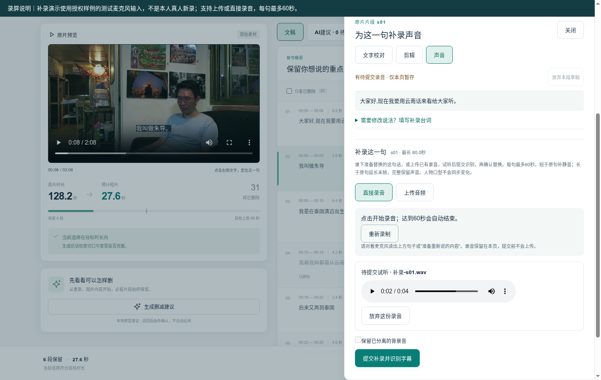
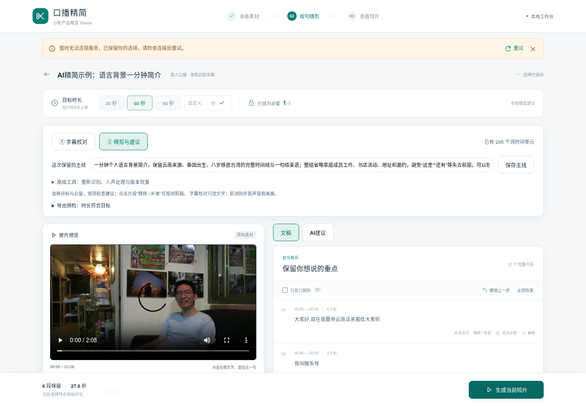
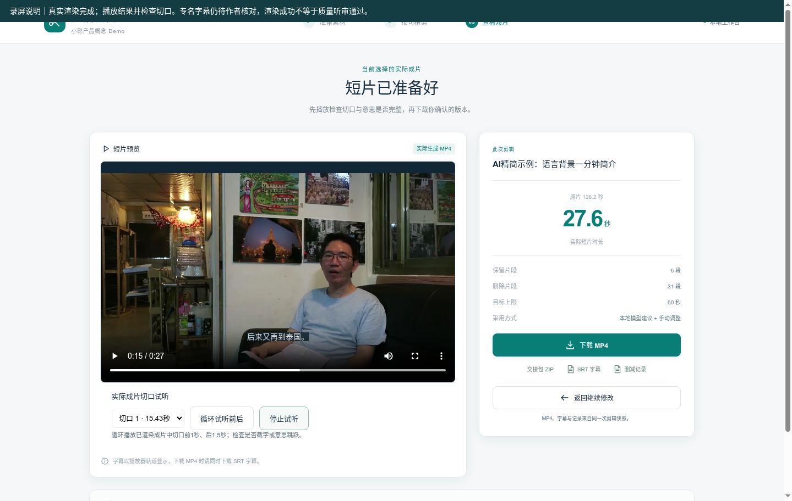
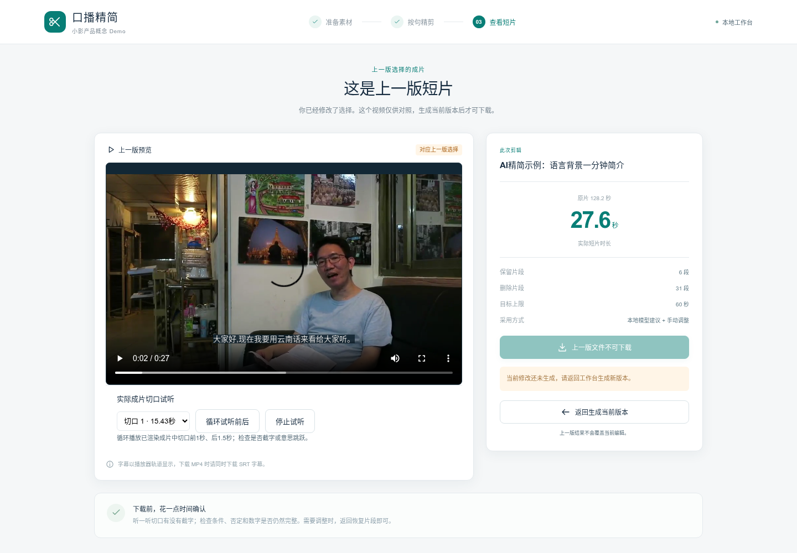

口播精简｜最终交付
将已有中文口播整理成可审阅、可恢复的短片。
这是离线展示包。亲自剪辑请下载完整源码，并按首次运行指南启动。独立复核记录
实际操作 Demo · 2 分 51.56 秒
连续实际屏幕和浏览器声音；真实模型推理148.2秒在录制前完成并明示。补录使用授权样例测试输入；网络失败演示采用浏览器中断请求。
1 进入任务
选择已获授权的真人样例；目标是将已有口播整理成一分钟内简介。

2 保护必留内容
目标短于必留内容时提示冲突并禁用生成，不自动删除保护内容。

3 文稿与原片联动
核对主线、目标和句子，点击文字定位；可剪词、恢复和整句调整。

4 审核真实模型候选
本次Qwen实际推理148.2秒产生32项候选；作者可逐项接受、拒绝或批量确认。

5 为一句补录声音
上传或直接录音，先试听再识别和确认；图中使用授权样例测试输入，每句上限60秒。

6 失败后可继续
浏览器中断一次渲染请求，界面保留编辑并提供重试；服务端故障注入关闭。

7 播放和下载结果
本轮确认及手动恢复后导出27.588秒短片；切口可循环试听，MP4/SRT/记录同版下载。

8 继续编辑与版本保护
编辑后旧成片标注为上一版，保留预览并禁用当前下载，提示重新生成。

媒体：Wikitongues, Teddy Nee，CC BY-SA 4.0；转码、截取及剪辑。个人观点按用户审阅稿保留，提交前由本人核对。